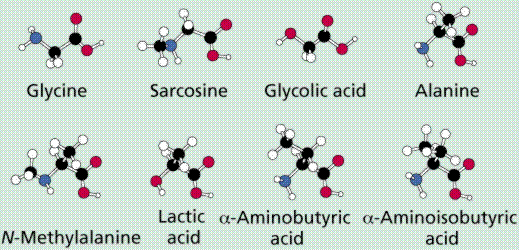
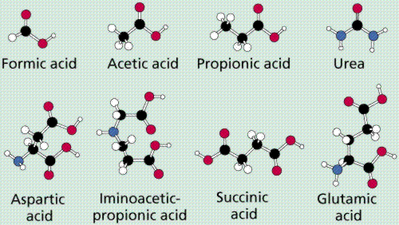

{kind=link}

Learning Objectives | Terms | Review Questions | Links | References
Image of the precambrian reduced in size from http://www.uta.edu/geology/geol1425earth_system/images/gaia_chapter_11/ArcheanLandscape.jpg.
One way to represent geological time. Note the break during the precambrian. If the vertical scale was truly to scale the precambrian would account for 7/8 of the graphic. This image is from http://www.clearlight.com/~mhieb/WVFossils/GeolTimeScale.html.
Scientific estimates place the origin of the Universe at between 10 and 20 billion years ago. The theory currently with the most acceptance is the Big Bang Theory, the idea that all matter in the Universe existed in a cosmic egg (smaller than the size of a modern hydrogen atom) that exploded, forming the Universe. Recent discoveries from the Space Telescope and other devices suggest this theory smay need some modification. Evidence for the Big Bang includes:
1) The Red Shift: when stars/galaxies are moving away from us the energy they emit is shifted to the red side of the visible-light spectrum. Those moving towards us are shifted to the violet side. This shift is an example of the Doppler effect. Similar effects are observed when listening to a train whistle-- it will sound higher (shorter wavelengths) approaching and lower (longer wavelengths) as it moves away. Likewise red wavelengths are longer than violet ones. Most galaxies appear to be moving away from ours.2) Background radiation: two Bell Labs scientists discovered that in interstellar space there is a slight background radiation, thought to be the residual afterblast remnant of the Big Bang.
Soon after the Big Bang the major forces (such as gravity, weak nuclear force, strong nuclear force, etc.) differentiated. While in the cosmic egg, scientists think that matter and energy as we understand them did not exist, but rather they formed soon after the bang. After 10 million to 1 billion years the universe became clumpy, with matter beginning to accumulate into solar systems. One of those solar systems, ours, began to form approximately 5 billion years ago, with a large "protostar" (that became our sun) in the center. The planets were in orbits some distance from the star, their increasing gravitational fields sweeping stray debris into larger and larger planetesimals that eventually formed planets.
The processes of radioactive decay and heat generated by the impact of planetesimals heated the Earth, which then began to differentiate into a "cooled" outer cooled crust (of silicon, oxygen and other relatively light elements) and increasingly hotter inner areas (composed of the heavier and denser elements such as iron and nickel). Impact (asteroid, comet, planetismals) and the beginnings of volcanism released water vapor, carbon dioxide, methane, ammonia and other gases into a developing atmosphere. Sometime "soon" after this, life on earth began.
Extra-terrestrial: In 1969, a meteorite (left-over bits from the origin of the solar system) landed near Allende, Mexico. The Allende Meteorite (and others of its sort) have been analyzed and found to contain amino acids, the building blocks of proteins, one of the four organic molecule groups basic to all life. The idea of panspermia hypothesized that life originated out in space and came to earth inside a meteorite. Recently, this idea has been revived as Cosmic Ancestry. The amino acids recovered from meteorites are in a group known as exotics: they do not occur in the chemical systems of living things. The ET theory is now not considered by most scientists to be correct, although the August 1996 discovery of the Martian meteorite and its possible fossils have revived thought of life elsewhere in the Solar System.
Supernatural: Since science is an attempt to measure and study the natural world, this theory is outside science (at least our current understanding of science). Science classes deal with science, and this idea is in the category of not-science.
Organic Chemical Evolution: Until the mid-1800's scientists thought organic chemicals (those with a C-C skeleton) could only form by the actions of living things. A French scientist heated crystals of a mineral (a mineral is by definition inorganic), and discovered that they formed urea (an organic chemical) when they cooled. Russian scientist and academecian A.I. Oparin, in 1922, hypothesized that cellular life was preceeded by a period of chemical evolution. These chemicals, he argued, must have arisen spontaneously under conditions exisitng billions of years ago (and quite unlike current conditions).
Ingredients used in Miller's experiments, simple molecules thought at the time to have existed on the Earth billions of years ago. Image from Purves et al., Life: The Science of Biology, 4th Edition, by Sinauer Associates (www.sinauer.com) and WH Freeman (www.whfreeman.com), used with permission.
In 1950, then-graduate student Stanley Miller designed an experimental test for Oparin's hypothesis. Oparin's original hypothesis called for : 1) little or no free oxygen (oxygen not bonded to other elements); and 2) C H O and N in abundance. Studies of modern volcanic eruptions support inference of the existence of such an atmosphere. Miller discharged an electric spark into a mixture thought to resemble the primordial composition of the atmosphere. From the water receptacle, designed to model an ancient ocean, Miller recovered amino acids. Subsequent modifications of the atmosphere have produced representatives or precursors of all four organic macromolecular classes.

A diagrammatic representation of Miller's experimental apparatus. Image from Purves et al., Life: The Science of Biology, 4th Edition, by Sinauer Associates (www.sinauer.com) and WH Freeman (www.whfreeman.com), used with permission.
The primordial Earth was a very different place than today, with greater amounts of energy, stronger storms, etc. The oceans were a "soup" of organic compounds that formed by inorganic processes (although this soup would not taste umm ummm good). Miller's (and subsequent) experiments have not proven life originated in this way, only that conditions thought to have existed over 3 billion years ago were such that the spontaneous (inorganic) formation of organic macromolecules could have taken place. The simple inorganic molecules that Miller placed into his apparatus, produced a variety of complex molecules:



Molecules recovered from Miller's and similar experiments. Image from Purves et al., Life: The Science of Biology, 4th Edition, by Sinauer Associates (www.sinauer.com) and WH Freeman (www.whfreeman.com), used with permission.
The interactions of these molecules would have increased as their concentrations increased. Reactions would have led to the building of larger, more complex molecules. A pre-cellular life would have began with the formation of nucleic acids. Chemicals made by these nucleic acids would have remained in proximity to the nucleic acids. Eventually the pre-cells would have been enclosed in a lipid-protein membrane, which would have resulted in the first cells.
Biochemically, living systems are separated from other chemical systems by three things.
Fossil evidence supports the origins of life on earth earlier than 3.5 billion years ago. The North Pole microfossils from Australia (the Apex Chert) are complex enough that more primitive cells must have existed earlier. From rocks of the Ishua Super Group in Greenland come possibly the earliest cells, as much as 3.8 billion years old. The oldest known rocks on Earth are 3.96 billion years old and are from Arctic Canada. Thus, life appears to have begun soon after the cooling of the Earth and formation of the atmosphere and oceans.
These ancient fossils occur in marine rocks, such as limestones and sandstones, that formed in ancient oceans. The organisms living today that are most similar to ancient life forms are the archaebacteria. This group is today restricted to marginal environments. Recent discoveries of bacteria at mid-ocean ridges add yet another possible origin for life: at these mid-ocean geological structures where heat and molten rock rise to the Earth's surface.
The proximity of the earth to the sun, the make-up of the earth's crust (silicate mixtures, presence of water, etc.) and the size of the earth suggest we may be unique in our own solar system, at least. Mars is smaller, farther from the sun, has a lower gravitational field (which would keep the atmosphere from escaping into space) and does show evidence of running water sometime in its past. If life did start on Mars, however, there appears to be no life (as we know it) today. Venus, the second planet, is closer to the sun, and appears similar to earth in many respects. Carbon dioxide build-up has resulted in a "greenhouse planet" with strong storms and strongly acidic rain. Of all planets in the solar system, Venus is most likely to have some form of C-based life. The outer planets are as yet too poorly understood, although it seems unlikely that Jupiter or Saturn harbor life as we know it. Like Goldilocks would say "Venus is too hot, Mars is too cold, the Earth is just right!"
Mars: In August 1996, evidence of life on Mars (or at least the chemistry of life), was announced. Click here to view that article and related ones. The results of years of study are inconclusive at best. The purported bacteria are much smaller than any known bacteria on earth, were not hollow, and most could possibly have been mineral in origin. However, many scientists consider that the chemistry of life appears to have been established on Mars. Search for Martian life (or its remains) continues.
The oldest accepted prokaryote fossils date to 3.5 billion years; Eukaryotic fossils to between 750 million years and possibly as old as 1.2-1.5 billion years. Multicellular fossils, purportedly of animals, have been recovered from 750Ma rocks in various parts of the world. The first eukaryotes were undoubtedly Protistans, a group that is thought to have given rise to the other eukaryotic kingdoms. Multicellularity allows specialization of function, for example muscle fibers are specialized for contraction, neuron cells for transmission of nerve messages.
The Archean Eon encompasses the time from the formation of the earth until 2.5 billion years ago. The rocks formed during this eon are the most ancient rocks known, up to 3.96 billion years old. The nature of this rock inducates that there were/are even older rocks that, if they still exist, have yet to be located and dated. Perhaps the biggest development during the Archean was the first appearance of life. The earliest forms of life were simple prokaryotic cells, in a few cases remarkably similar to living prokaryotic forms (at least in terms of observable cell structure and size). Fossil evidence supports the origins of life on earth earlier than 3.5 billion years ago. Specimens from the North Pole region of Western Australia are of such diversity and apparent complexity that even more primitive cells must have existed earlier. Rocks of the Ishua Super Group in Greenland yield possibly the fossil remains of the earliest cells, 3.8 billion years old. Life appears to have begun soon after the cooling of the Earth and formation of its atmosphere and oceans.
These ancient fossils occur in marine rocks, such as limestones and sandstones, that formed in ancient oceans. The organisms living today that are most similar to ancient life forms are the archaebacteria (the archaea in modern usage). This group is today restricted to marginal environments. Recent discoveries of life at mid-ocean ridges add yet another possible place of origin: at these mid-ocean ridges where heat and molten rock rise to the earth's surface.
Archaea and Eubacteria are similar in size and shape. When we do recover fossilized bacteria those are the two features we will usually see: size and shape. How can we distinguish between the two groups: the use of molecular fossils that will point to either (but not both) groups. Such a chemical fossil has been found and its presence in the Ishua rocks of Greenland (3.8 billion years old) suggests that the archeans were present at that time.
Microfossils from the Apex Chert, North Pole, Australia. These organisms are Archean in age, approximately 3.465 billion years old, and resemble filamentous cyanobacteria. Image from http://www.astrobiology.ucla.edu/ESS116/L15/1515%20Apex%20Chert.jpg.
Many of the ancient phototrophs and heterotrophic bacteria lived in colonial associations known as stromatolites. Cyanobacteria occur on the outer surface, with other photosynthetic bacteria (anoxic, which do not produce oxygen from their photosynthesis process)) below them. Below these phototrophs are layers of heterotrophic bacteria. The layers in the stromatolites are alternating biogenic and sedimentologic in origin. Stromatolites become more common in the Proterozoic and decline during the Cambrian. Modern stromatolites are found in marine environments where the presence of herbivorous :grazers" is limited.
Image of Sharks Bay, Australia extant stromatolites, a cross section of one of these structures, and a closeup of the cyanobacteria that make up the bulk of the feature. Image from http://www.dme.wa.gov.au/ancientfossils/sharkbay2.jpg.
Diagram of a stromatolite and its structure as a series of alternating layers of algae and sediments. Image from http://www.uta.edu/geology/geol1425earth_system/images/gaia_chapter_10/stromatolites.htm.
A fossil stromatolite from the North Pole deposits in Western Australia. These deposits are approximately 3.5 billion years old. Image from http://www.carleton.ca/~tpatters/teaching/intro/precambrian/precambrian7.html.
The Proterozoic Eon covers the time span from 2.5 billion to 544 million years ago. Simple, prokaryotic cells still dominated the world's environments until the evolution of simple eukaryotes approximately 1.5-1.2 billion years ago. With the appearance of eukaryotes comes the development of sexual reproduction, which greatly increased the variation that natural selection could operate on. A major enbvironmental change, initiated by living things, was the development of oxygenic photosynthesis. This led to increasing oxygen levels during later Proterozoic. Geologists refer to the "great iron crisis" when the rising levels of oxygen in the world's oceans caused the formation or iron oxide (Fe2O3), often preserved as the banded iron formation (an important commercial source of iron).
Banded iron formation, illustrating the alternating layers of magnetite and hematite (the red iron) and chert. Image from http://www.agso.gov.au/education/factsheet/ironform.html.
The first protist (eukaryotic) fossils have commonly been thought to be in rocks approximately 1.2-1.4 billion years old (Proterozoic) from the Bitter Springs Formation in Australia. The Bitter Springs deposits also yield a variety of bacteria and cyanobacterial types. Recent study of the Bitter Springs eukaryote fossils suggests they may in fact be cyanobactria. A group of undoubted eukaryote fossils is the "acritarchs". This term applies to resting cycts of single-celled algae. Acrtitarchs have been recovered from sediments that are as old as 1.8 billion years.
Multicellular protists appeared in the fossil record more than 600 million years ago near the very end of the precambrian. This time is referred to as the Vendian Period (650 to 544 million years ago), and is characterized by the appearance of soft-bodied animal fossils. Multicellular animal fossils and burrows (presumably made by unknown multicellular animals) first appear 700 million years ago, during the late precambrian time. All known Proterozoic animal fossils had soft body parts: no shells or hard (and hence preservable as fossils) parts. There are some paleontologists who suspect that the Vendian faunas were reduced by an extinction event, possibly related to massive glaciation, at the close of the vendian time. In any event, many animals in the Vendian assemblages are quite unlike anything living today, while others can be traced to extant phyla.
Dickinsonia sp. a Vendian animal fossil thought related to the annelid worms. Image is from http://www.ucmp.berkeley.edu/vendian/dickinsonia.jpg.
Spriggina sp. an enigmatic fossil from the Ediacara Hills in Australia. This fossil has been classified with the annelid worms as well as recently an unknown group of arthropods. Image from http://www.ucmp.berkeley.edu/vendian/spriggina.gif.
Some problemmatic fossils, thought by some paleobotanists to be multicellular algae, have been found in rocks approximately one billion years old. However, the multicellular algae are usually classified based on their pigments, which commonly are not preserved in the fossils.
Reconstruction of the sea floor during the Vendian times when the Ediacaran organisms thrived. Image from http://www.carleton.ca/~tpatters/teaching/intro/cambrian/cambrianex8.html.
Orientation of continents in Rodinia supercontinent at the close of the precambrian. Image from http://astro.sau.edu/~earth/html/md-tectonics.html.
Miller S. L. 1953 A production of amino acids under possible primitive Earth conditions, Science; 117: 528-529.
Oparin, A. I. 1961 Life: its nature, origin and development. translated from Russian by Ann Synge. Oliver & Boyd, 207p.
Oparin, A. I., 1968 (translated from a book published in Russian in 1966), "Genesis and Evolutionary Development of Life," Academic Press, New York, 203 p.
Schopf, J. W. 1999 Cradle of Life: The Discovery of earth's Earliest Fossils. Princeton University Press, 367 p.
Email: mj.farabee@emcmail.maricopa.edu
Last modified:
The URL of this page is:
{kind=link}
{kind=link}
{kind=link}
{kind=link}